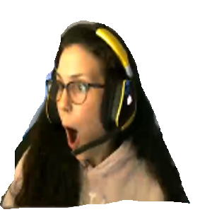

<mat-sidenav-container class="sidenav-container">
  <!-- Inside the sidenav bar -->
  <mat-sidenav class="sidenav" #sidenav mode="side" [(opened)]="opened">
    <mat-action-list>
      <button mat-list-item [routerLink]="['twitch']">
        <mat-icon matListIcon class="list-icon-spacer">video_call</mat-icon>
        Twitch
      </button>
      <button mat-list-item [routerLink]="['about']">
        <mat-icon matListIcon class="list-icon-spacer">person</mat-icon>
        About
      </button>
    </mat-action-list>
  </mat-sidenav>
  <!-- Outside the sidenav -->
  <mat-sidenav-content>
    <!-- Title Bar -->
    <mat-toolbar color="primary">
      <button mat-icon-button (click)="sidenav.toggle()">
        <mat-icon>menu</mat-icon>
      </button>
      <span class="spacer"></span>
      <span>Meg Pog</span>
      <span></span>
    </mat-toolbar>
    <!-- All other content -->
    <router-outlet></router-outlet>
  </mat-sidenav-content>
</mat-sidenav-container>